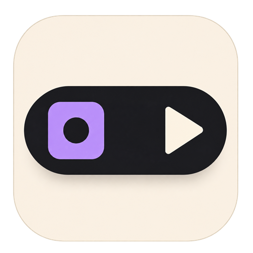

Moves as one.
Artwork becomes controls, then a full player. Every layer gathers back into your island.

IslaA little island for your offline music.
Artwork becomes controls, then a full player. Every layer gathers back into your island.
Ten-band EQ, eleven presets, crossfade and an optional pulse driven by the music.
Your files, playlists and favorites. No account. No streaming subscription.
Native installers and development notes live on GitHub Releases. Windows requires WebView2. macOS builds are ad-hoc signed, not notarized; Linux integration depends on the desktop/window manager. Broader hands-on testing of macOS and Linux is ongoing.